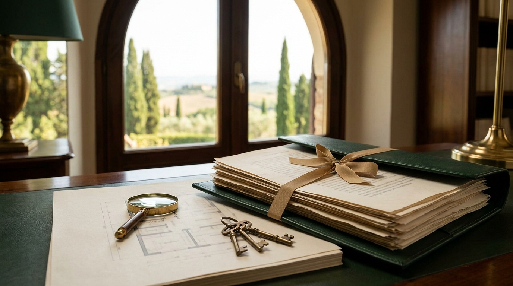

Convocazione dell'assemblea condominiale: l'amministratore deve allegare tutti i documenti?
L'amministratore non è obbligato ad allegare ogni documento alla convocazione dell'assemblea, soprattutto quando le materie sono già state trattate. Spetta al condomino chiederne visione in prossimità della riunione. Il principio incide sulla validità delle delibere e sui margini di impugnazione: capire dove finisce l'obbligo dell'amministratore e dove inizia l'onere del singolo è decisivo.

Il principio: nessun obbligo automatico di allegare la documentazione
La questione è ricorrente: l'amministratore deve inviare a ciascun condomino tutti i documenti relativi ai punti all'ordine del giorno insieme all'avviso di convocazione?
La risposta della giurisprudenza è negativa. L'orientamento consolidato della Cassazione (tra le altre, Cass. civ., sez. VI, n. 19799/2014 e successive conformi) afferma che l'avviso di convocazione deve indicare in modo chiaro le materie da trattare, così da consentire a ciascun partecipante di formarsi un'opinione consapevole. Non è invece richiesto che alla convocazione siano fisicamente allegati i documenti di supporto, specie quando gli argomenti sono già stati esaminati in precedenti assemblee.
L'onere si sposta dunque sul condomino: chi vuole esaminare i documenti deve attivarsi e richiederli all'amministratore in prossimità della riunione, in tempo utile per consultarli.
L'inquadramento normativo: art. 66 disp. att. e art. 1130-bis cod. civ.
Il combinato disposto è chiaro. L'art. 66 disp. att. cod. civ. disciplina la convocazione e impone che l'avviso contenga l'indicazione specifica dell'ordine del giorno. La norma tutela la cosiddetta idoneità informativa dell'avviso: il condomino deve poter comprendere su cosa sarà chiamato a deliberare.
L'art. 1130-bis cod. civ. riconosce poi a ogni condomino il diritto di prendere visione ed estrarre copia, a proprie spese, della documentazione contabile e dei giustificativi di spesa. Si tratta di un diritto di accesso permanente, che non si concentra solo nel momento della convocazione e che il singolo è tenuto a esercitare attivamente.
La logica è coerente: l'amministratore garantisce l'accessibilità dei documenti; il condomino, se interessato, ne fa richiesta.
Validità della delibera: annullabilità o nullità?
Qui si gioca la rilevanza pratica del principio. Un avviso di convocazione viziato non rende la delibera automaticamente nulla.
Le Sezioni Unite della Cassazione (Cass. SU n. 9839/2021) hanno ridefinito i criteri di distinzione. Sono nulle le delibere prive degli elementi essenziali, con oggetto impossibile o illecito, o che incidono su diritti individuali sulle cose comuni. Sono invece annullabili – e quindi impugnabili nel termine di trenta giorni ex art. 1137 cod. civ. – le delibere affette da vizi procedurali, come l'irregolarità della convocazione o l'incompletezza informativa dell'avviso.
La carenza documentale nella convocazione rientra, di regola, tra i vizi di annullabilità. La conseguenza è duplice: il condomino deve impugnare entro il termine breve e l'eventuale acquiescenza – la partecipazione senza riserve – preclude la successiva contestazione.
Cosa cambia per i condomini: l'onere di attivarsi sulla convocazione dell'assemblea condominiale
Il condomino non può più attendere passivamente di ricevere tutto in busta chiusa. Se intende valutare a fondo le materie da deliberare, deve esaminare la documentazione prima dell'assemblea.
Per l'amministratore, viceversa, l'allegazione integrale dei documenti non è un obbligo generalizzato, ma resta buona prassi su materie nuove o di rilevante impatto economico, perché riduce il rischio di contestazioni.
In presenza di delibere su argomenti complessi o di significativo valore, un esame preventivo della documentazione consente di partecipare in modo informato e di valutare con cognizione l'eventuale dissenso da mettere a verbale.
Cosa fare in concreto
- Leggi l'ordine del giorno con attenzione: verifica che ogni punto sia indicato in modo specifico e comprensibile, non con formule generiche.
- Richiedi i documenti per iscritto: se la convocazione non li allega, inoltra all'amministratore richiesta di visione ed estrazione copia ex art. 1130-bis, in tempo utile prima della riunione.
- Conserva data e forma della richiesta: una richiesta tracciabile (PEC o raccomandata) è utile se l'amministratore non risponde o risponde tardivamente.
- Annota il dissenso a verbale: se partecipi e non condividi una delibera, fai mettere a verbale la tua opposizione; l'acquiescenza preclude l'impugnazione.
- Rispetta i termini di impugnazione: il termine di trenta giorni dall'assemblea (dalla comunicazione del verbale, per l'assente) decorre rapidamente. Verifica la natura del vizio prima di agire.
Contributo informativo a cura di Tamburro & Partners Avvocati - Avv. Giuseppe Tamburro. Non costituisce parere legale.
Ogni condominio ha una storia a sé.
Se gestisci un'amministrazione e vuoi un confronto su una specifica questione condominiale, scrivi allo studio. Ti rispondiamo entro un giorno lavorativo.